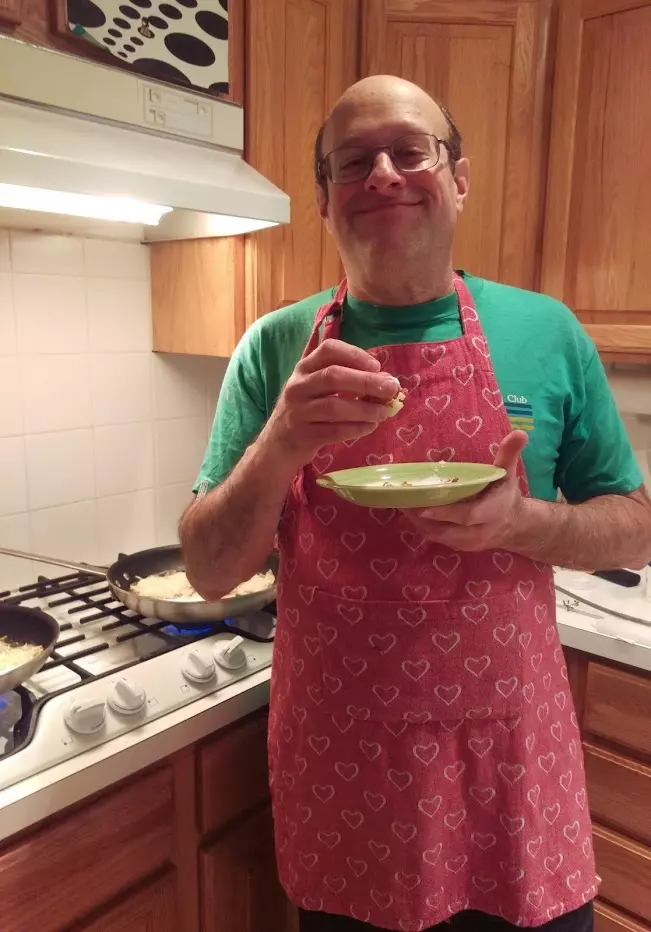

My name is Terry Carmen. This is my website.
There are no ads or tracking or long winded opinions. It’s just a place where I keep my favorite recipes.
Contact: terry@bupkis.org
Terry Carmen's favorite things: Friends, Cooking, Eating and SCUBA Diving.

My name is Terry Carmen. This is my website.
There are no ads or tracking or long winded opinions. It’s just a place where I keep my favorite recipes.
Contact: terry@bupkis.org